Finanzas
FinanzasSi últimamente has abierto LinkedIn, probablemente lo has visto: parece que todos hablan del “futuro del trabajo”.
 Cultura
CulturaSé que suena raro hablar de calor extremo mientras en Chile todos están buscando la parka más gruesa del clóset.
 Tecnología
TecnologíaSi eres como yo y revisas TikTok e Instagram constantemente, te habrás dado cuenta de que estas redes son casi como un experimento social.
 Cultura
CulturaEl hecho de que estemos entrando al mes de julio no se puede creer. Pero lo que tampoco se puede creer es la cantidad de artistas que han…
 Cultura
CulturaCuando hablamos de trabajos clásicos de la música chilena, siempre se nombran los discos de Violeta Parra, Víctor Jara, Los Jaivas o…
 Finanzas
FinanzasChile no está en el Mundial 2026. Ya lo sabemos, ya dolió, ya hicimos memes tristes y nos resignamos a ver la Copa del Mundo desde la casa.
 Finanzas
FinanzasHace casi dos años me vine a vivir a Italia y llegué con una idea muy instalada en la cabeza: que todo iba a ser mucho más caro que en…
 Tecnología
TecnologíaHablamos mucho de inteligencia artificial. La tenemos integrada en nuestra vida, nos ayuda en nuestros trabajos y le preguntamos cosas de…
 Tecnología
TecnologíaDurante años hemos pensado en la inteligencia artificial como algo súper frío: servidores gigantes, computadores procesando datos y…
 Cultura
CulturaSi de britpop se trata, la discusión siempre se resume a la existencia de dos grupos: Oasis y Blur. Ambas bandas, que siempre mostraron una…
 Tecnología
TecnologíaEstamos tan acostumbrados a ver la inteligencia artificial hacer cosas random (dibujar imágenes raras, responder preguntas existenciales…
Hay pocos cantantes más multifacéticos, inquietos y distintivos en el rock contemporáneo que Maynard James Keenan, voz de Tool, A Perfect…
 Actualidad
ActualidadEl recordado programa noventero “Venga Conmigo” marcó a toda una generación en Chile. Su exitoso segmento “Corazones Service” se transformó…
De cara a las presentaciones del cantautor uruguayo Jorge Drexler en Chile los próximos 25 y 26 de abril, importante es saber el contexto…
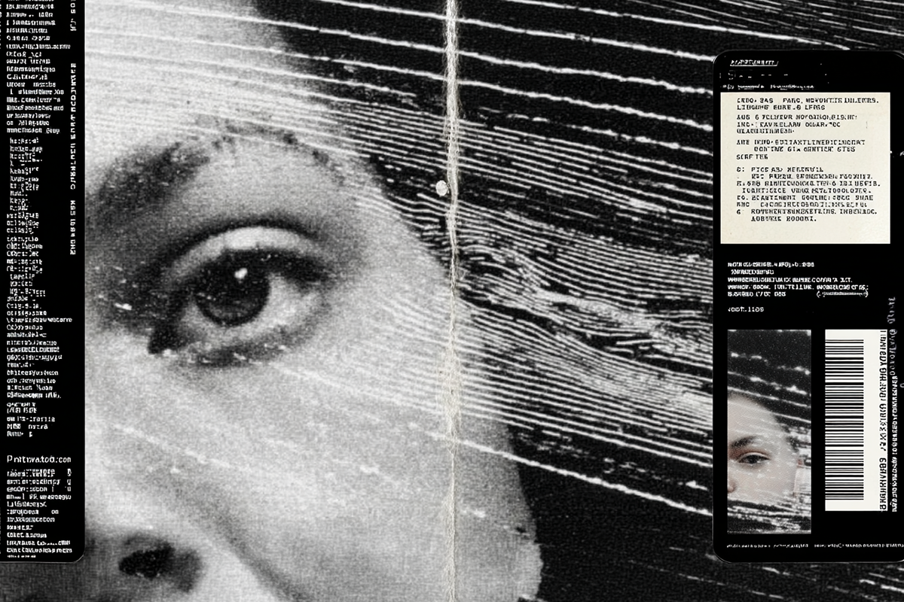
Tecnología¿Te has preguntado qué pasaría hoy si llegan a robarte el teléfono? Probablemente tengas las apps importantes con clave, pero ¿qué pasaría…
En todas las empresas parece ser el tema del año: la inteligencia artificial. Hay programas dentro de las compañías donde se incentiva su…
Para los millennials, ver nuevas parejas, compromisos y vacaciones juntos en redes sociales es la norma.
Han pasado cuatro años desde que el último lanzamiento del ex One Direction, Harry Styles, llegó a nuestras vidas.
 Tecnología
TecnologíaDurante años, ser “digital” era saber usar herramientas: mandar correos, hacer una planilla o buscar en Google.
Por años, la tecnología en el arte estaba ahí, pero bien piola. Luces, sonido, efectos… Funcionaba perfecto, pero no era protagonista.
 Cultura
CulturaEstamos en marzo, notoriamente uno de los meses más fuertes si hablamos de shows en vivo en Latinoamérica, y Chile no está lejos de ser la…
Si uno se queda con LinkedIn, X o el típico discurso tech, pareciera que todo el mundo ya usa inteligencia artificial para trabajar mejor…
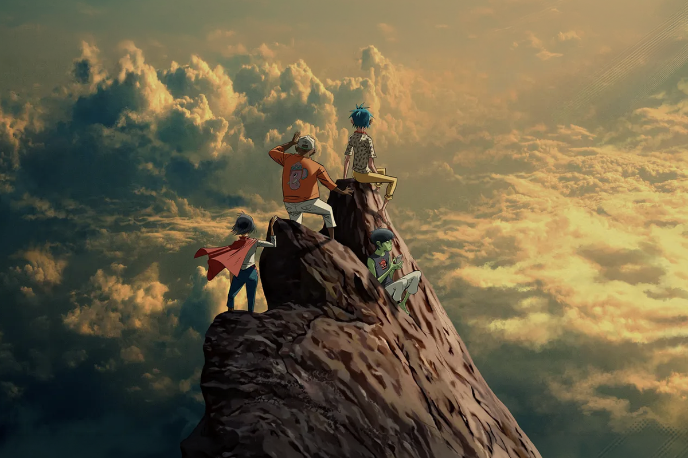
CulturaEl noveno álbum de estudio de la banda virtual Gorillaz, creada por Damon Albarn y Jamie Hewlett, se titula The Mountain y nos invita a…
Hoy, usar inteligencia artificial todavía se siente bastante neutro. Entramos, hacemos una pregunta - ya sea sobre plata, viajes…
Probablemente lo has visto en LinkedIn desde hace algunas semanas. Todo el mundo habla de Claude, la nueva herramienta de inteligencia…
 Cultura
CulturaEs típico de las series o películas tipo Jane Austen. Tres personas leyendo en una sala iluminada, comentando la historia o los personajes…
 Cultura
CulturaEn tiempos de exceso de información, encontrar panoramas de fin de semana y planes entretenidos parece una odisea.
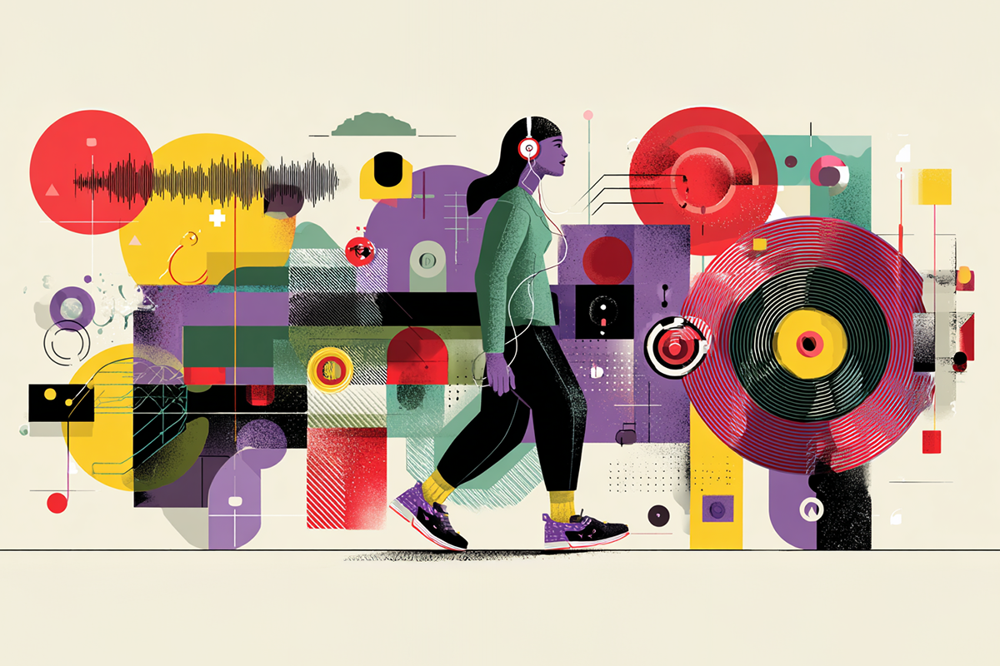
CulturaEstá bien, llevamos poquito de este año, pero los días pasan volando y, no quiero ser esa persona, pero no nos vamos a dar cuenta cuando ya…
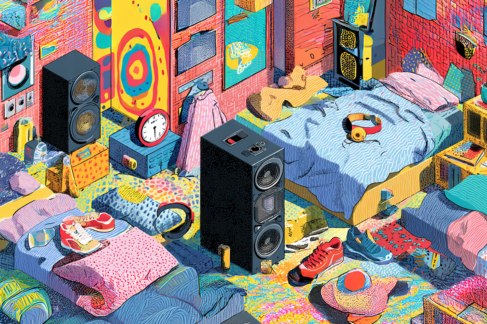
CulturaAhora que está tan de moda revivir el 2016, quizás sea buena idea revisar cuáles eran los singles que marcaron ese año, tan nostálgico para…
Hay un momento en el que una persona se da cuenta de que la inteligencia artificial ya no es solo “tecnología”: cuando te salva de algo que…
Durante años, la tecnología fue algo que cargábamos en el bolsillo o apoyábamos sobre la mesa: un celular, un reloj, un computador.
 Finanzas
FinanzasAtrás han quedado los tiempos donde los vuelos se compraban con agencias de turismo. En las últimas décadas y con la modernización de los…
No creo estar tan alejada de la opinión popular (y especializada) cuando digo con toda la confianza del mundo que el cartel que se propuso…
 Actualidad
ActualidadHace aproximadamente 2 meses comenzamos con el cierre de lo que empezó en julio como el “Compariniverse”.
Hay un momento que todos vivimos una vez al mes: abrir la app del banco, ves menos plata de la que recordabas y piensas “ya, pero si no…
Hace no tanto tiempo, autorizar una transferencia era una prueba de estrés: recordar la clave, no equivocarte 3 veces, rezar por un SMS que…
 Cultura
Cultura¿Te has preguntado por qué estos últimos años las canciones parece que cada vez son más cortas? O quizás no te lo habías preguntado hasta…
 Cultura
CulturaEn una era digital cada vez más expansiva, que nos aleja año a año de aquellos tiempos en que escuchar música implicaba más de un artefacto…
El término “economía plateada” ha ganado fuerza en los últimos años. Se refiere a toda la economía que rodea al segmento senior, es decir…
Si nos remontamos a los años ochenta o noventa, aprender a manejar y sacar licencia de conducir era como un “rito de paso”.
 Cultura
CulturaSe nos va (volando) un nuevo año, y las listas y resúmenes musicales se toman todos los portales, incluyéndonos a nosotros.
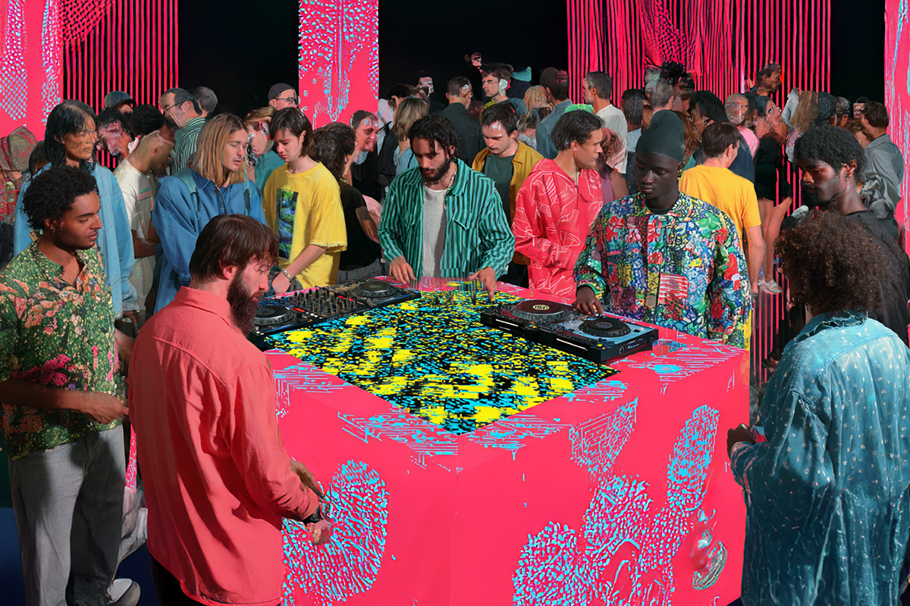
CulturaSi hay algo que sabemos de la música electrónica, es que muchas de sus escenas comienzan en las sombras, con sets que cuentan con números…
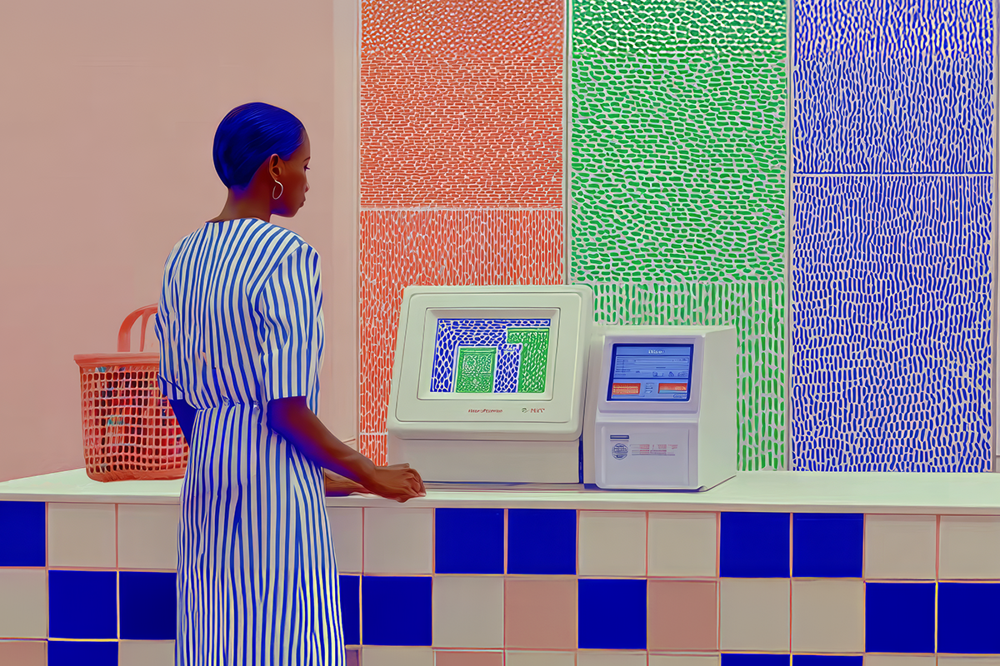
Tecnología¿Te has dado cuenta de que últimamente todo lo que veíamos en las series futuristas empieza a hacerse realidad?
Uno de los nombres en la industria del k-pop que salió del nicho y que llegó a los portales musicales de todo el mundo, fue el de NewJeans…
 Actualidad
ActualidadHace unos meses lanzamos Compariniverse: la primera campaña en Chile protagonizada por una celebridad completamente clonada con IA.
 Finanzas
FinanzasEn los últimos meses, pareciera que Chile se está preparando para “enchufarse”. Las calles se están llenando poco a poco de autos…
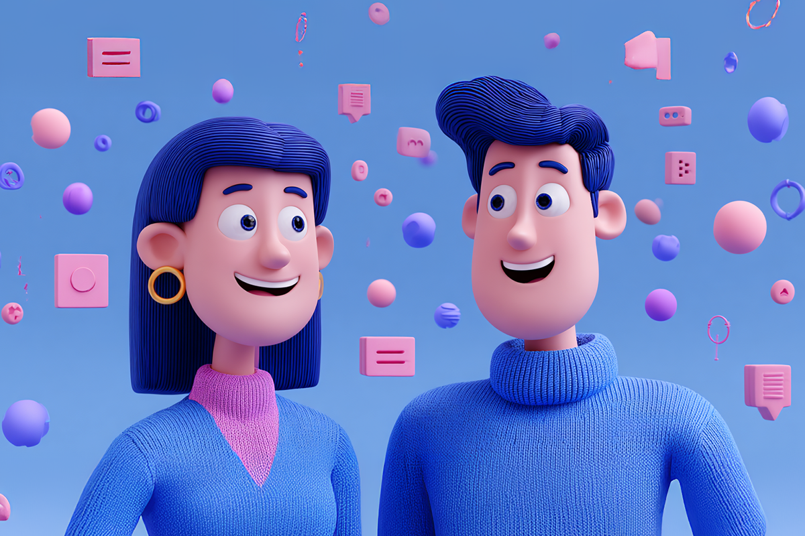
TecnologíaParece ser que la inteligencia artificial está dominando todo en nuestras vidas. Es tan simple como escuchar música en Spotify y ver cómo…
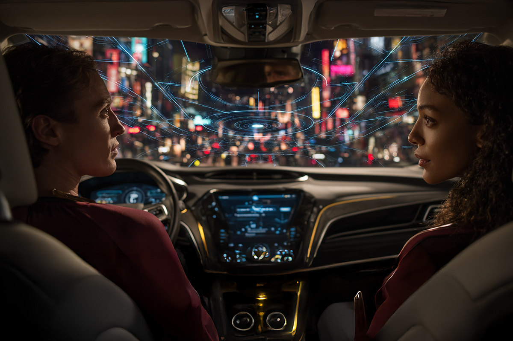
TecnologíaHasta ahora el copiloto es tu amigo o familiar que te grita “¡dobla a la derecha ahora!”, mientras ve alguna app de movilidad.
Después de ser el canal más renombrado si de vídeos musicales se trata, una vitrina para nuevos y antiguos talentos, además de moldear los…
 Tecnología
TecnologíaSeguro lo viste hace algunas semanas. La empresa OpenAI, creadora de ChatGPT, lanzó un generador de video tan bueno que asusta.
Rosalía, la camaleónica cantante española que se ha hecho conocida por sus peculiares arreglos en su música y en su forma de cantar…
 Tecnología
TecnologíaHasta hace poco, el trabajo “de oficina” era sinónimo de tareas repetitivas: cargar correos, responder mensajes, clasificar leads o revisar…
 Actualidad
ActualidadSi es la primera vez que lees un post de El Comparador, te contamos algo antes de que sigas tu lectura.
En el camino de la IA y el trabajo, hace tiempo que queremos mostrar cómo se ha transformado el trabajo en Compara.
 Tecnología
TecnologíaCon el lanzamiento de las novedades de Apple hace algunas semanas, vino también un anuncio que no pasó tan desapercibido: los Airpods ahora…
 Cultura
CulturaEn esta publicación colisionan dos mundos que, muchas veces, se guiñan los ojos, pero que caminan de forma paralela.
 Tecnología
TecnologíaEl 2025 quedará en el historial: los ataques con mensajes falsos se dispararon en un 71% en Chile. WhatsApp, correos, mensajes de texto……
Hace unos días se informó con un par de vídeos oficiales que el puertorriqueño Bad Bunny será el protagonista del show de medio tiempo del…
 Tecnología
TecnologíaMucho se ha hablado de los autos eléctricos en los últimos años. El bajo nivel de emisiones en un contexto de calentamiento global…
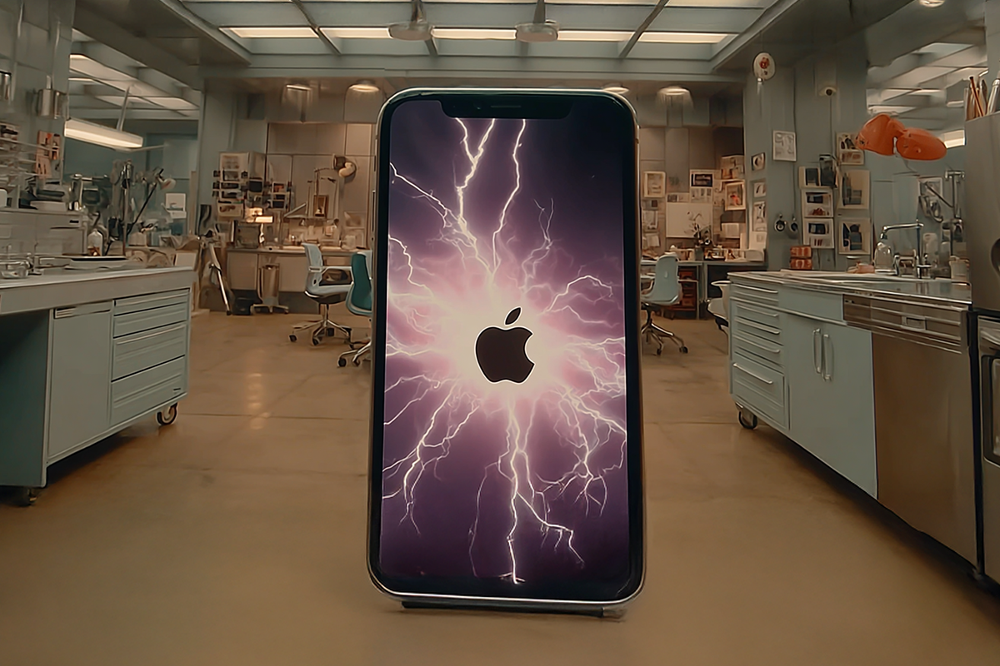
TecnologíaComo cada septiembre, los fanáticos de Apple se alistan para los nuevos lanzamientos. El día llegó el pasado martes 9 de septiembre en el…
Desde que salió la inteligencia artificial, es como que todo el mundo hablara de ella: qué tipo de cosas necesitas aprender de IA para el…
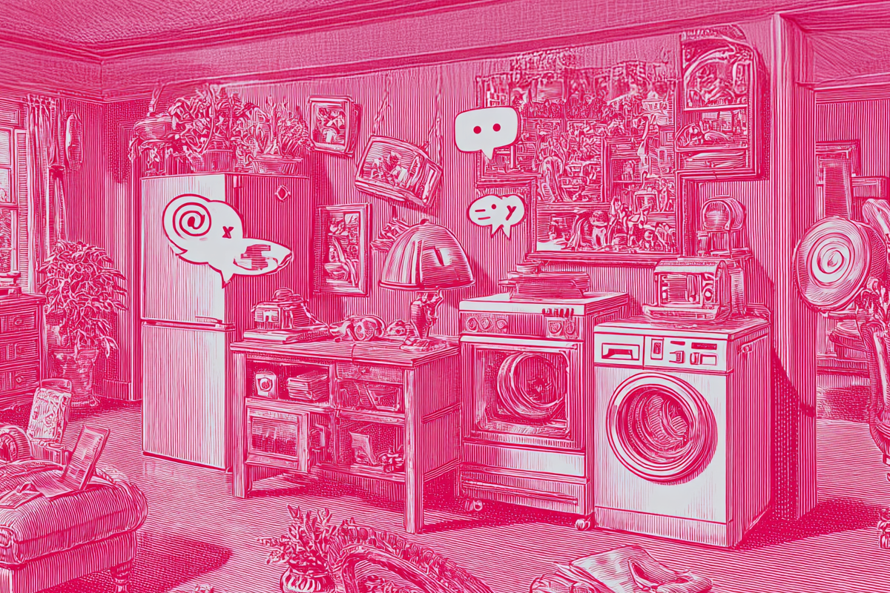
TecnologíaSpotify ya nos notificaba sobre lanzamientos, playlists, conciertos y podcast que “seguro te gustarán”.
Si hay algo que podemos sacar en limpio sobre los vídeos de TikTok o los reels de Instagram, es que siempre nos van a entregar canciones o…
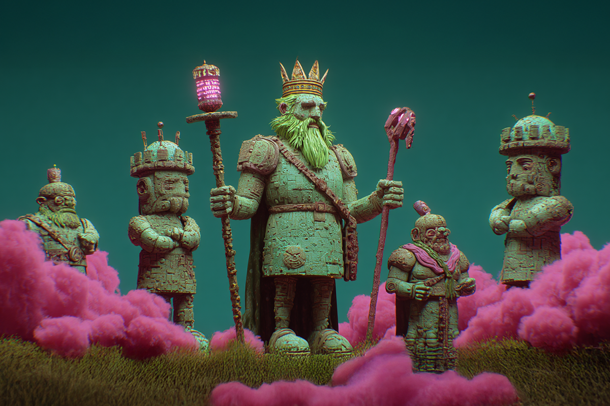
TecnologíaBasta un pequeño “scrolleo” en LinkedIn para encontrarlos. Son la nueva sensación del mundo laboral: los Chief AI Officer, o en español…
Selena Gómez, Dua Lipa y Taylor Swift dijeron “sí” este 2025. Y aunque sus anillos brillan en Instagram, para nuestra generación el…
Latinoamérica en un territorio con vasto conocimiento si hablamos de lo que Japón tiene para ofrecer.
En este nuevo mundo distópico en el que nos hemos sumergido hace relativamente poco, no sabemos lo que es real o lo que no.
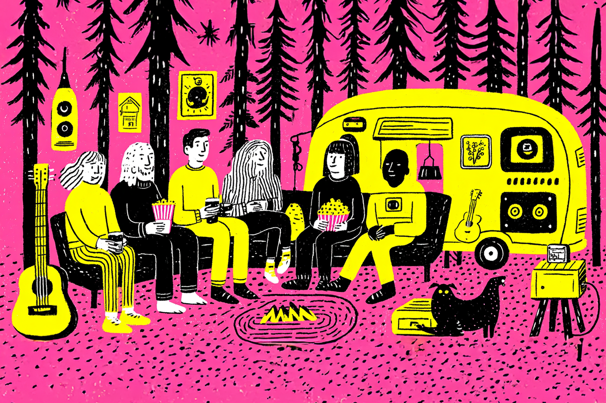
CulturaNo somos pocos los que disfrutamos de un buen documental en la comodidad de nuestros hogares, pero cuánto mejor si estos proyectos tratan…
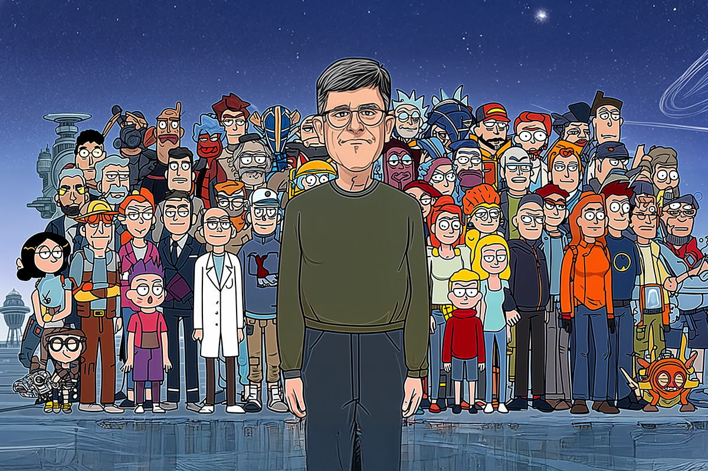
Actualidad¿Y si te dijera que podrías crear tu propia serie animada en minutos, sin saber dibujar, escribir guiones ni editar videos?
Llegó el momento de celebrar para los amantes de los cuatro acordes, de aquellos que aprendieron a tocar la guitarra con “Wonderwall” y de…
 Cultura
CulturaSabemos que puede ser complicado mantenerte enterado de cada palabra, frase o jerga que se estila entre los más jóvenes en redes sociales…
 Finanzas
Finanzas¿Se acuerdan de la época en que todo lo estadounidense era mejor? En los 70s o 80s, al menos en Chile, la gente se peleaba por quién tenía…
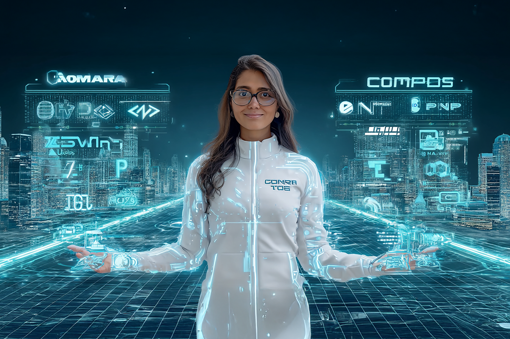
ActualidadSi hace unos años nos hubieran preguntado qué era lo más importante a la hora de contratar, probablemente habríamos hablado de experiencia…
Todo cambia, ¿cierto? Las formas de trabajar, las maneras de consumir contenido y también de entretenerse.
 Tecnología
TecnologíaMucho antes de hablarle a un chatbot, ya convivías con la IA todos los días. Desde que irrumpió ChatGPT, pareciera que la inteligencia…
El 2025 se ha pasado volando. Ya vamos por la mitad del año y no podemos negar que estos meses se nos fueron como un guiño.
 Cultura
CulturaMuchos conocen a la cantautora norteamericana Taylor Swift, pero no todos saben que la artista se encontró en una batalla legal tremenda…
 Actualidad
ActualidadA medida que la Generación Z va entrando al mundo laboral, han empezado a aparecer nuevos conceptos en torno al trabajo.
Si nos adentramos en el mundo de las creencias en TikTok, aparecen todo tipo de corrientes. Gente que cree que todo lo que pasa en la vida…
 Tecnología
TecnologíaLuego de que Mark Zuckerberg presentara su nueva propuesta de inteligencia artificial para revolucionar la publicidad online, en las…
 Tecnología
Tecnología¿Tienes un iPhone o un Android? Entonces seguro estás familiarizado con esas notificaciones que te avisan de una nueva actualización del…
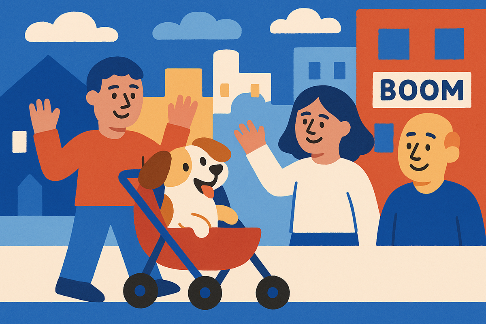
ActualidadHace unas décadas, lo normal era que tus papás a los 30 ya tuvieran dos hijos, una casa propia y hasta planes para un tercero.
Todos lo hemos vivido. Últimamente, ir a un concierto ya no se trata solo de esquivar cabezas de personas más altas que nosotros.
 Cultura
CulturaSi YouTube es uno de tus mejores amigos y además te consideras un melómano empedernido, no me sorprendería que conozcas el espacio Tiny…
Hoy muchos conversan con inteligencias artificiales como Chat Gpt como si fueran personas: les cuentan sus penas, les piden consejos, y…
 Actualidad
ActualidadÚltimamente, hemos visto como las diferentes casas de moda mundialmente reconocidas han pasado por transiciones.
¿Un Jesús holográfico dando consejos en una iglesia suiza? No es ciencia ficción: pasó de verdad. Y este caso refleja algo mucho más…
 Cultura
CulturaDel discurso a la música, Bad Bunny se ha vuelto en un referente de la cultura puertorriqueña pero no solo desde su innegable popularidad…
 Cultura
CulturaSi en redes sociales no has escuchado esta canción, o no te suena esta, definitivamente, tienes que haberte topado con este single en algún…
Hasta hace poco, imaginábamos a la Generación Z, es decir, los nacidos entre 1997 a 2012, como adolescentes colegiales.
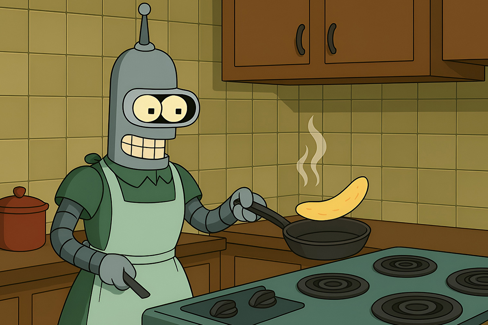
Tecnología¿Te acuerdas de Bender de “Futurama”? Ese robot chistoso que siempre andaba metido en alguna aventura loca.
La tecnología está revolucionando -nuevamente- el fútbol profesional de una manera que ni los más grandes futbolistas podrían haber…
 Cultura
Cultura23 años. Solo 23 años tiene el artista chileno urbano del momento que logró, de manera histórica, convertirse en el primer artista nacional…
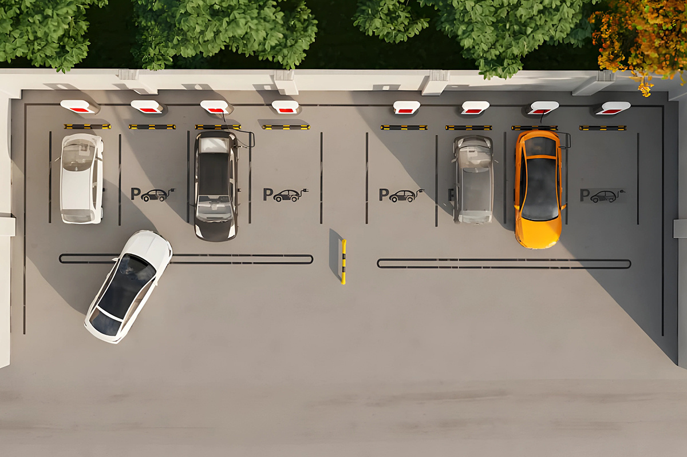
TecnologíaHace un tiempo que se habla de los nuevos autos eléctricos: cómo contaminan menos, gastan menos energía y marcan el camino hacia un futuro…
 Tecnología
TecnologíaLa inteligencia artificial (o IA) ha revolucionado nuestras vidas en los últimos años. Desde buscar respuestas y obtener información hasta…
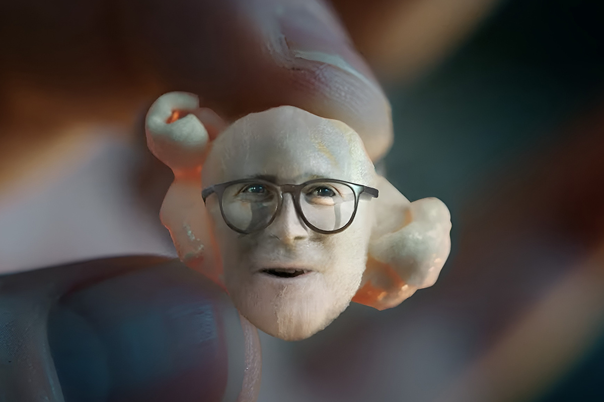
ActualidadCuando el team de Compara nos trajo el brief para la nueva campaña, lo primero que nos preguntamos fue: ¿Qué hacemos con Comparini?
 Cultura
CulturaYa desde mediados del año pasado han comenzado a confirmarse diferentes fechas en Chile que respaldan el éxito del K-pop en el país, el que…
Hace un tiempo, más precisamente noviembre del 2024, se anunció que Tool tocaría en el Movistar Arena.
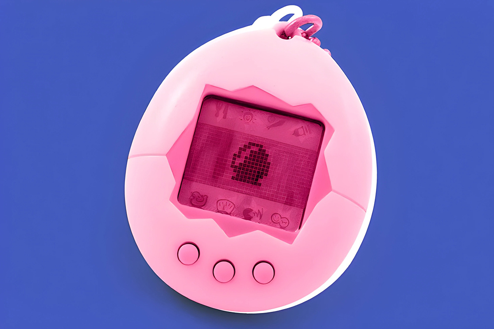
CulturaLas décadas de los 90 y los 2000 fueron tiempos gloriosos y de pura explosión cultural para nosotros, los millennials.
 Cultura
CulturaLa mezcla de estilos, el concepto del hombre multi-instrumentalista, las letras poéticas y la performance teatral traen a la cabeza un…
Ya han pasado varios meses desde que se anunció el Line up oficial para Lollapalooza Chile 2025 y son varios los nombres que figuran cerca…
 Seguros
SegurosEl anuncio del posible impacto del Asteroide 2024 YR4 en la Tierra nos hizo recordar la película Don’t Look Up y analizar ciertos factores…
Leemos y escuchamos mucho del empresario Elon Musk. Su odisea al comprar Twitter y llamarlo X, su empresa Tesla con autos eléctricos, o sus…
 Cultura
CulturaBruno Mars, el reciente ganador de los premios Grammy por su colaboración con Lady Gaga para el hit “Die With A Smile”, cerró un 2024 con…
 Cultura
CulturaSi hay algo que a los chilenos nos une en febrero, además del calor infernal y las vacaciones, es el Festival de Viña.
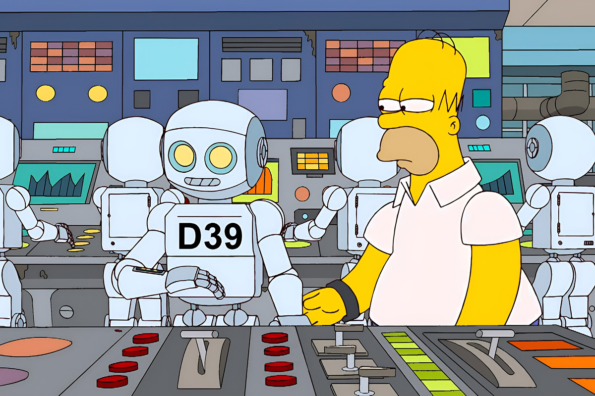
TecnologíaSeguro has escuchado más de una vez la frase: “Los robots dominarán el mundo”. Y aunque no sabemos realmente qué nos depara el futuro, lo…
 Seguros
SegurosPodemos decir que el Festival de Viña es un evento que nos marca que estamos en verano, que cuando lo veamos seguro estamos tomando unas…
 Finanzas
FinanzasVamos a hablar de un tema que parece “fome” y capaz, muy elevado en ciertos ámbitos, pero que a decir verdad es algo que transitamos a lo…
Este año para nosotros fue el equivalente a un año perruno (es decir, 7 humanos). Vivimos tantas cosas que sentimos que pasó mucho tiempo.
 Actualidad
Actualidad¿Sabían que en Compara un 63% de las personas que trabajan son mujeres? Una de ellas es Andrea Trujillo, Ingeniera Comercial y actualmente…
 Finanzas
FinanzasEl 2024 trajo muchas cosas nuevas, en Brasil un cambio histórico en la forma de movilizarse. Cada país tiene su medio de transporte…
 Actualidad
Actualidad¿Cómo trabajan las Startups? Seguramente no hay una sola forma, pero si podemos contarte como lo hace Compara.
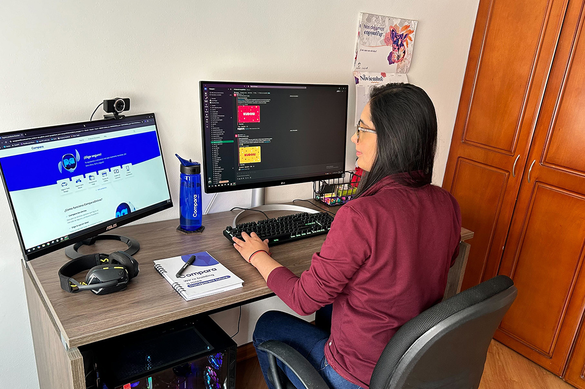
Actualidad¿Se han preguntado alguna vez cuál es la diferencia de solo ser beneficiario al de ser parte de la generación de esos beneficios?
 Seguros
SegurosEl crecimiento de los autos eléctricos está siendo cada vez mayor, ya no nos sorprende ver estaciones de carga para estos, ni que algún…
 Actualidad
ActualidadImagínense la película Caza Fantasmas, pero en vez de cazar estos cuerpos etéreos, lo hacemos con talentos.
A esta altura del partido, para nadie es un secreto que el concepto de marca ha evolucionado. En un entorno empresarial dinámico, líquido y…
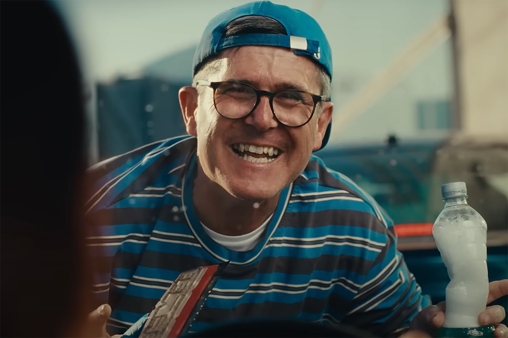
ActualidadComparini-Compara está presente en todas partes, creíamos que iba a ser así, pero verlo materializado nos hizo creer aún más que lo que…
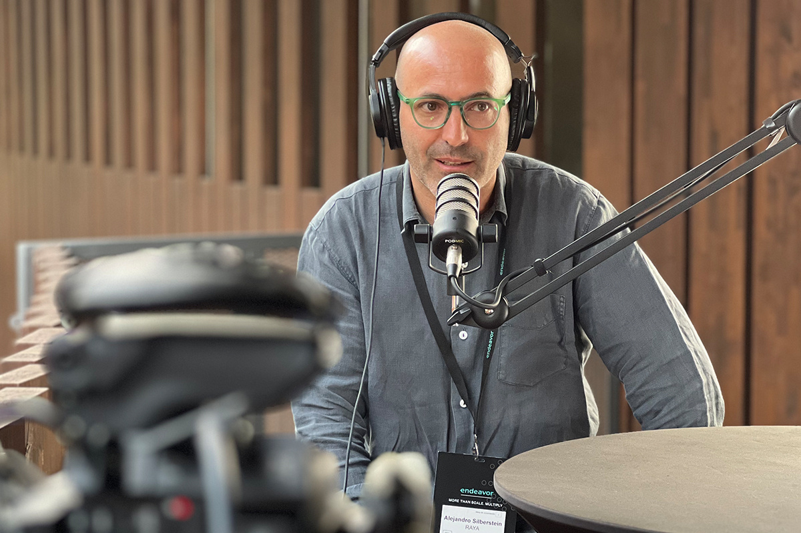
TecnologíaLa publicidad, la creatividad y el marketing están en constante evolución, y como socio de Raya, he sido testigo de cómo la tecnología ha…
 Actualidad
Actualidad¿Cómo surge?, ¿qué hay detrás de esto?, ¿de quién fue la idea? ¿Comparini puede ser mi tío? Todas estas preguntas tienen su respuesta a…
 Tecnología
TecnologíaEn esta era de las apps y cookies, le damos aceptar a todo, confiando que no van a usar nuestros datos de manera irresponsable.
 Actualidad
ActualidadA veces, en el mundo del marketing, llegas a un punto donde, por mucho que todo esté funcionando bien, sientes que algo falta.
 Seguros
Seguros¿Se imaginan ser los primeros en hacer algo? Es algo que con la realidad actual no sucede, ya no había nada nuevo bajo el sol, pero Compara…
 Seguros
SegurosEn Compara somos fans de muchas cosas, pero hay una que seguro tú también lo eres, y es viajar. Conocer nuevas culturas, organizar el mapa…
Ella es Eunice, es de Honduras y trabaja en Compara hace casi 3 años. Hace unas semanas viajó 5637 km hasta Chile para encontrarse con sus…
 Actualidad
ActualidadHoy les vamos a contar la historia de Elisa, más conocida por sus amigos de Compara como "Bee". Es de Bahía, Brasil (sí, ahí donde…